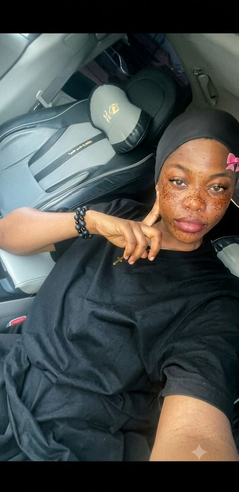

Home
About me
I'm Vanessa Awo, a software engineer from Abuja, Nigeria, currently completing the Software Development degree through BYU‑Pathway while also pursuing a Computer Science degree at a physical university. This page tracks my progress through the Web and Computer Programming certificate as I build toward a full portfolio of frontend projects.

Vanessa Awo
Web and Computer Programming Certificate
Connect
I'm always open to connecting with fellow developers and business owners looking to grow their online presence. Reach out through GitHub or LinkedIn below, or check back weekly as this page grows alongside the Chamber of Commerce and Final course projects.